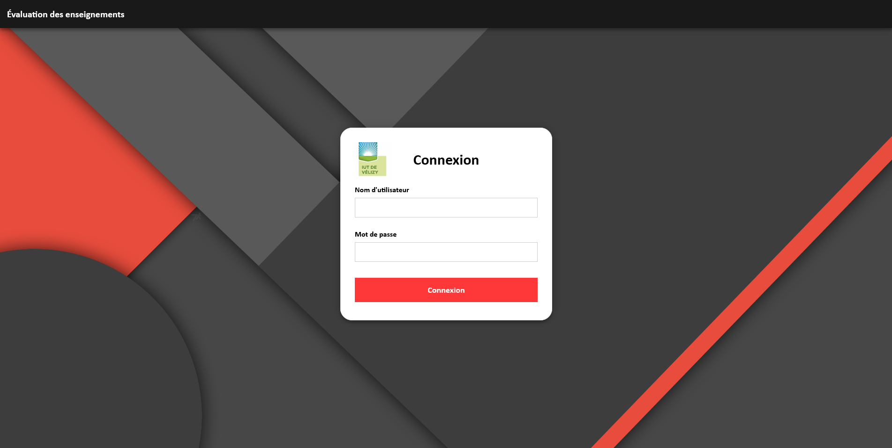
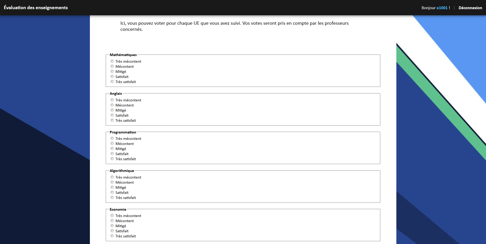
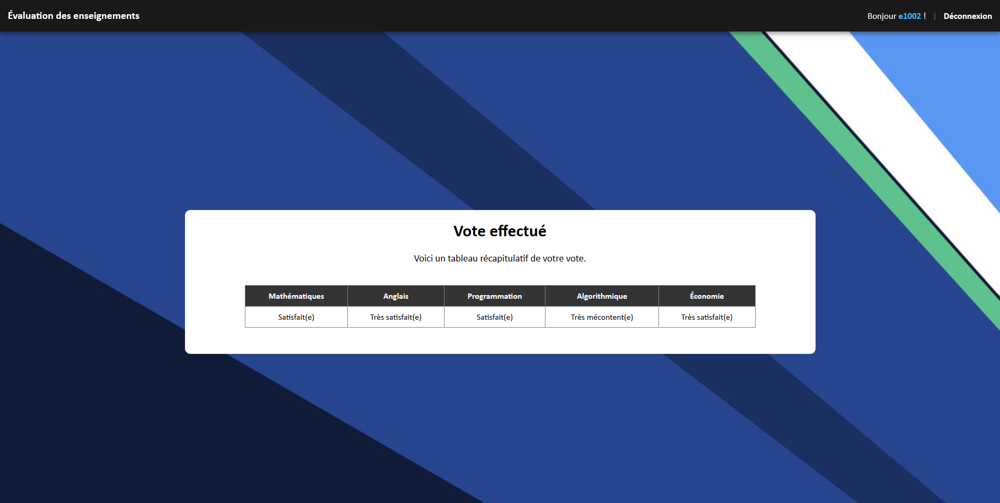
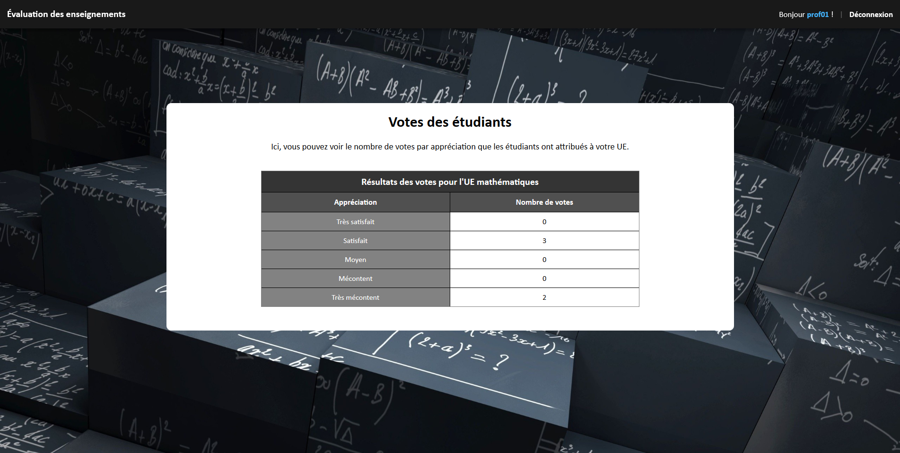
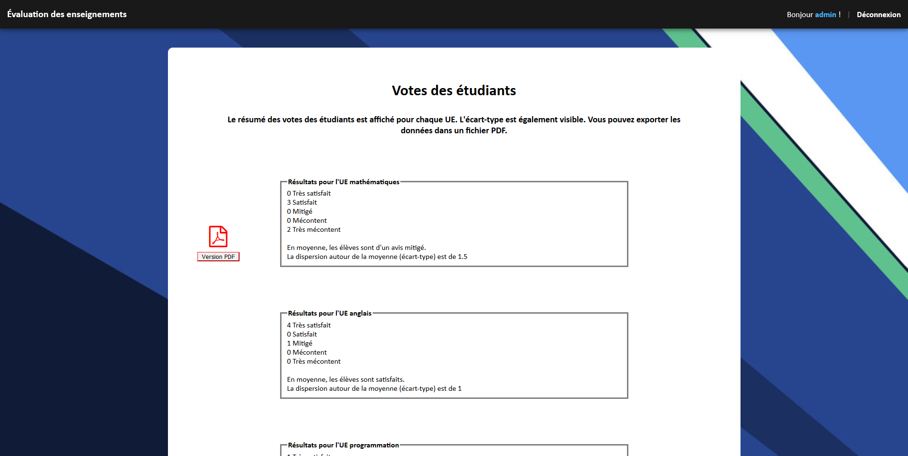

Cette application web a été créé dans le but de mettre en application les connaissances et compétences acquises au cours du module de programmabtion web côté serveur.
Elle permet aux étudiants d'évaluer anonyement les enseignements suivis à l'IUT.
Les professeurs peuvent se servir des données récoltées afin d'adapter les cours aux attentes des étudiants.
L'application peut être utilisée de différentes façons:
Les étudiants donnent leur appréciation concernant les enseigments qu'ils ont suivi.
S'ils ont déjà voté, ils peuvent visualiser les apprécations qu'ils ont données.
Les professeurs visualisent les votes concernant leur(s) matières.
L'administrateur visualise le bilan des votes regroupés par enseignement et peut générer un rapport au format PDF. Il peut aussi voir l'écart type (afin d'analyser la dispersion des votes).
Page de connexionPage de voteRécaputilatif du vote d'un étudiantRécapitulatif des votes pour un(e) enseignant(e)Récapitulatif des votes pour l'administrateur
{kind=link}